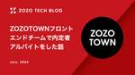
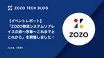
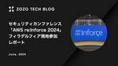

ZOZO TECH BLOG
https://techblog.zozo.com/
ZOZO TECH BLOG
フィード

ZOZOTOWNフロントエンドチームで内定者アルバイトをした話 2
2
ZOZO TECH BLOG
はじめに はじめまして。2024年に新卒として株式会社ZOZOに入社しました。佐藤仁と申します。 この記事は4か月間にわたる内定者アルバイトの体験記です。アルバイトの概要、チームの文化、実際に行ったタスク、反省点、フィードバックをご紹介します。
1日前
Software Design 2024年6月号 連載「レガシーシステム攻略のプロセス」第2回 ZOZOTOWNリプレイスにおけるIaCやCI/CD関連の取り組み 6
ZOZO TECH BLOG
Software Design 2024年6月号 連載「レガシーシステム攻略のプロセス」第2回「ZOZOTOWNリプレイスにおけるIaCやCI/CD関連の取り組み」を記事として全文公開しました！ぜひご覧ください！
4日前

【イベントレポート】「ZOZO物流システムリプレイスの旅〜序章〜これまでとこれから」を開催しました！ 3
ZOZO TECH BLOG
6月25日に開催したイベントのレポートを公開しました！当日いただいた質問への回答も掲載していますので、ぜひご覧ください！
4日前
ZOZOTOWNの企画LPをアーカイブする！ 6
ZOZO TECH BLOG
目次 目次 はじめに 企画LPの儚さ 企画LPをアーカイブする！ 仕様 開発について 技術選定 ちょっと技術の話 スクラム開発 ユーザーの反応 おわりに はじめに こんにちは！ ZOZOTOWN企画開発部・企画フロントエンド1ブロックの秋山です。ZOZOTOWNトップでは、セール訴求や新作アイテム訴求、未出店ブランドの期間限定ポップアップ、著名人コラボなどの企画イベントが毎日何かしら打ち出されています。私はそのプラットフォームとなる企画LPをメインに実装するチームに在籍しています。 チーム特性としては以下のようなものがあります！ クリエイティブコーディング寄りの実装をする機会に恵まれやすい 普…
4日前
ZOZOのSREが行くAWS Summit Japan 2024参加レポート 23
ZOZO TECH BLOG
6/20〜6/21に開催されたAWS Summit Japan 2024の参加レポートをお届けします！
5日前

セキュリティカンファレンス「AWS re:Inforce 2024」フィラデルフィア現地参加レポート 20
ZOZO TECH BLOG
はじめに こんにちは、CISO部の兵藤です。日々ZOZOの安全のためにSOC対応を行なっています。普段のSOCの取り組みについては以下「フィッシングハントの始め方」等をご参照ください。 techblog.zozo.com 6/10〜6/12にアメリカのフィラデルフィアで開催されたAWS re:Inforce 2024に参加してきました。この記事ではその参加レポートをお届けします。 フィラデルフィア現地会場前の様子 目次 はじめに 目次 AWS re:Inforce 2024とは セッションの紹介 Builder's Session TDR355 Detecting ransomware and…
12日前

新卒2年目WEARのiOSエンジニアが行くWWDC24現地レポート
ZOZO TECH BLOG
現地ならではのイベント内容や雰囲気などを中心にZOZOのiOSエンジニアによるWWDC24の参加レポートをお届けします！
18日前
ElasticsearchによるZOZOTOWNへのベクトル検索の導入検討とその課題
ZOZO TECH BLOG
こんにちは。検索基盤部の橘です。ZOZOTOWNでは、商品検索エンジンとしてElasticsearchを利用し、大規模なデータに対して高速な全文検索を実現しています。 Elasticsearchに関する取り組みは以下の記事をご覧ください。 techblog.zozo.com 検索基盤部では、ZOZOTOWNの検索結果の品質向上を目指し、新しい検索手法の導入を検討しています。本記事ではベクトル検索と呼ばれる検索手法に関して得た知見を紹介します。 ※本記事はElasticsearchバージョン8.9に関する内容となっています。
20日前
大公開！バッチアプリケーションの品質を高めるZOZOの『バッチ開発ガイドライン』
ZOZO TECH BLOG
ZOZOでは開発ガイドラインを用いてシステム品質を担保しています。今回バッチ開発用のガイドラインを作成したのでその紹介をします。
22日前
Software Design 2024年5月号 連載「レガシーシステム攻略のプロセス」第1回 ZOZOTOWNリプレイスプロジェクトの全体アーキテクチャと組織設計
ZOZO TECH BLOG
はじめに 技術評論社様より発刊されているSoftware Designの2024年5月号より「レガシーシステム攻略のプロセス」と題した全8回の連載が始まりました。 本連載では、ZOZOTOWNリプレイスプロジェクトについて紹介します。2017年に始まったリプレイスプロジェクトにおいて、ZOZO がどのような意図で、どのように取り組んできたのか、読者のみなさんに有益な情報をお伝えしていければと思いますので、ご期待ください。第1回目のテーマは、「ZOZOTOWNリプレイスプロジェクトの全体アーキテクチャと組織設計」です。
1ヶ月前
計測フレームワークのSwift Package Manager導入への道のり
ZOZO TECH BLOG
計測フレームワークをCocoaPodsからSPMに移行した経緯と移行作業の中で詰まったポイントを紹介します。
1ヶ月前
RubyKaigi 2024 参加レポート
ZOZO TECH BLOG
2024/5/15〜17に開催されたRubyKaigi 2024の参加レポートです！現地の様子や、参加したエンジニアが気になったセッションを紹介しています！
1ヶ月前
ZOZOTOWNアプリのレガシーAPIリプレイスの道のり 〜チームでの挑戦〜
ZOZO TECH BLOG
はじめに こんにちは、ZOZOTOWN開発本部アプリバックエンドブロックの髙井です。 私達のチームでは、レガシーとなっているZOZOTOWNアプリ用API（以下、レガシーAPIと呼ぶ）のリプレイスに2023年から着手しています。リプレイス対象となるレガシーAPIは規模が大きいので、フェーズで区切り、段階的にリプレイスを進めています。区切られた各フェーズは、フェーズ1、フェーズ2といった形で呼び分けており、フェーズごとにリプレイス対象とするエンドポイントを設定しています。一方で、事業案件や他マイクロサービスのリプレイスが並行して行われるため、フェーズごとにリプレイス計画を柔軟に調整してきました。…
1ヶ月前
【イベントレポート】「Google Cloud Next ‘24 Recap in ZOZO」を開催しました！
ZOZO TECH BLOG
5月13日にGoogle Cloud Next ‘24を振り返る『Google Cloud Next ‘24 Recap in ZOZO』を開催しました。
1ヶ月前
【参加レポート】3DV 2024に参加しました
ZOZO TECH BLOG
3月18日から21日にスイスのダボスで開催されたコンピュータービジョンの国際学会3DV 2024に参加しました。学会の様子をお伝えします。
2ヶ月前
ファッション ワールド 東京 2024 春 参加レポート
ZOZO TECH BLOG
4月17日から19日にかけて東京ビッグサイトで開催された「ファッション ワールド 東京 2024 春」にZOZOがブースを出展しました。現地の様子をお伝えします。
2ヶ月前
MFA設定必須のCognitoのクロスアカウントマイグレーションについて
ZOZO TECH BLOG
はじめに こんにちは、計測プラットフォーム開発本部SREブロックの近藤です。普段はZOZOMATやZOZOGLASS、ZOZOFITなどの計測技術に関わるシステムの開発、運用に携わっています。 計測プラットフォーム開発本部では、複数のプロダクトを運用していますが並行して新しいプロダクトも開発しています。SREチームでは増え続けるプロダクトの運用負荷に対して改善は行っていますが、さらなるプロダクトの拡張に備えてZOZOFITの開発運用を別チームへ移管することになりました。移管作業の中でAWSリソースを別チームが管理するAWSアカウントへ移行する作業が発生することになりました。本記事では移行時に遭…
2ヶ月前
Google Cloud Next '24 参加レポート
ZOZO TECH BLOG
4/9〜4/11に開催されたGoogle Cloud Next '24の参加レポートです。開発・運用に影響を与える注目機能を詳しく紹介します。
2ヶ月前
ZOZOTOWNのクエリ解釈機能の改善に向けたAPIリプレイスの取り組み
ZOZO TECH BLOG
はじめに こんにちは。検索基盤部 検索技術ブロックの今井です。 検索基盤部では検索機能や検索精度を改善する中で検索クエリの意図解釈にも取り組んでいます。ZOZOTOWNで検索窓にクエリを入力して検索ボタンを押すと、クエリに応じて検索の絞り込み条件に変換するクエリ解釈機能の処理が動作します。 例えば、「ワンピース 白色」と検索した時、「ワンピース」を洋服のカテゴリー、「白色」を色のカテゴリーと解釈し、「白色のワンピース」を検索する絞り込み条件に変換します。 2024年5月現在ではスマートフォン向けWebサイト（https://zozo.jp/sp/xxx）とアプリのみ、クエリ解釈機能の処理が適用…
2ヶ月前
KubeCon + CloudNativeCon Europe 2024 参加レポート
ZOZO TECH BLOG
はじめに こんにちは。SRE部フロントSREブロックの三品です。 3月19日から3月22日にかけてKubeCon + CloudNativeCon Europe 2024（以下、KubeCon EUと呼びます）が行われました。今回弊社からはZOZOTOWNのマイクロサービスや基盤に関わるエンジニア、推薦システムに関わるエンジニアの合わせて4人で参加しました。 本記事では現地の様子や弊社エンジニアが気になったセッションや現地の様子について紹介していきます。
3ヶ月前
マルチテナントのAWSアカウントとKubernetesにおけるコストの可視化
ZOZO TECH BLOG
ZOZOTOWNにおけるマルチテナントプラットフォームのコスト可視化を行いました。その過程で発生した課題やアプローチ、工夫した取り組みなどをご紹介します。
3ヶ月前
5年ぶりの開催！「try! Swift Tokyo 2024」参加レポート
ZOZO TECH BLOG
2024年3月22日〜24日に開催された「try! Swift Tokyo 2024」と、アフターイベントのレポートを公開しました！
3ヶ月前
Elastic Cloudの特権アカウント共用から脱却！
ZOZO TECH BLOG
はじめに こんにちは、SRE部 検索基盤SREブロックの花房です。普段は、ZOZOTOWNの検索関連マイクロサービスにおけるQCD改善やインフラ運用を担当しています。 以前まで、検索基盤を支えるチームではElastic Cloudの特権アカウントをメンバーで共用していました。本記事では、2023年4月にリリースされたElastic CloudのRBAC（Role-Based Access Control）機能を活用して、特権アカウントの共用から脱却した取り組みについて紹介します。さらに、既存機能と組み合わせることで実現した、効率的な権限管理についても紹介します。 同様の課題を抱えている読者の方…
3ヶ月前
SQSを用いたクレジットカード決済の非同期化
ZOZO TECH BLOG
こんにちは、カート決済部カート決済サービスブロックの林です。普段はZOZOTOWN内のカートや決済の機能開発、保守運用、リプレイスを担当しています。 弊社ではカートや決済機能のリプレイスを進めており、これまでにカート投入のキャパシティコントロールや在庫データのクラウドリフトを実現しています。 techblog.zozo.com techblog.zozo.com 本記事では新たにクレジットカード決済処理を非同期化したリプレイス事例を紹介します。 はじめに 背景・課題 非同期化のシステム構成 パターン1 - 完全非同期化パターン パターン2 - 非同期・同期切り替えパターン パターン3 - ポー…
3ヶ月前
ZOZOTOWNのマーケティングプラットフォームでのフロントエンドの取り組み
ZOZO TECH BLOG
はじめに こんにちは、MA部の林（@hayash__p）です。 私達のチームでは、メール、LINE、Push通知、サイト内お知らせなどでユーザにZOZOTOWNのセールや新着商品を紹介するといった、マーケティングに関わるシステムを開発しています。これまで、配信チャネルや配信内容ごとに個別最適化したシステムを開発していましたが、それらを一新したマーケティングプラットフォームを作ることになりました。新しいマーケティングプラットフォームであるZOZO Marketing Platform（以下、ZMP）の概要については以下のテックブログをご覧ください。 techblog.zozo.com 本記事では…
3ヶ月前
Pull Requestのレビュー負荷を軽減し、開発生産性を向上するためにチームで取り組んだこと
ZOZO TECH BLOG
はじめに こんにちは。WEARフロントエンド部Webチームの藤井です。私たちのチームでは、WEARのWebサイトのリプレイスと新規機能の開発を並行して進めています。これらの開発を推進する中で、Pull Requestのレビュー負荷を軽減し、開発生産性を向上させるための取り組みを行なってきました。本記事では、その中で効果的だった取り組みについてご紹介します。 目次 はじめに 目次 背景と課題 レビューの体制の薄さ スコープの広さ 仕様把握の負担 対応内容についての説明不足 処理の複雑性 仕様の抜け漏れ 動作確認の手間 課題解決に向けた取り組み レビュー体制の見直し Pull Requestを小さ…
3ヶ月前
バッチシステムのリアーキテクチャを繰り返して見えた設計の勘所
ZOZO TECH BLOG
はじめに こんにちは、検索基盤部の倉澤です。検索基盤部では、検索機能に必要なデータを生成するバッチシステムの開発や運用を担当しています。また、ユーザーのニーズやサービスの成長に合わせてリアーキテクチャを行うこともあります。今回は、リアーキテクチャを繰り返し行う中で見えてきたバッチシステムの内部設計の品質を高める・標準化するためのポイントを紹介します。 今回、バッチシステムの内部設計をソフトウェアのアーキテクチャ特性（品質特性とも呼ばれる）に基づいて説明します。 ソフトウェアのアーキテクチャ特性とは、非機能要件や品質特性と同じ意味を指しますが、「ソフトウェアアーキテクトの基礎 （Fundamen…
3ヶ月前
ZOZOTOWNのマス配信バッチのリプレイス
ZOZO TECH BLOG
はじめに こんにちは、MA部の中原です。 MA部ではメルマガやLINE、アプリプッシュ通知を配信するためのマーケティングオートメーションシステムを開発・運用しています。 2022年からこのマーケティングオートメーションシステムをリプレイスするためのプロジェクトをMA部で進めています。リプレイス後の新しいマーケティングプラットフォームを「ZOZO Marketing Platform（略称：ZMP）」と呼んでいます。ZMPの概要については以下のテックブログをご覧ください。 techblog.zozo.com 本記事では、マス配信バッチのリプレイスについてご紹介します。 目次 はじめに 目次 配信…
3ヶ月前
ZOZOTOWNにおけるマーケティングメール配信基盤の構築
ZOZO TECH BLOG
はじめに こんにちは、MA部の松岡（@pine0619）です。MA部ではマーケティングオートメーションシステムの開発・運用に従事しています。 ZOZOTOWNでは、マーケティングオートメーションシステム（以下、MAシステム）を使い、メールやLINE、アプリプッシュ通知といったチャネルへのキャンペーンを配信しています。 MA部では、複数のMAシステムが存在しており、MAシステムそれぞれに各チャネルへの配信ロジックが記述されていました。これにより、現状の運用保守ならびに今後の改修コストが高いかつ、使用している外部サービスのレートリミットの一元管理が出来ていないなどの問題を抱えていました。そのため、…
3ヶ月前
ZOZOTOWNのネットワークをDirect Connect 10Gから100Gに移行した話
ZOZO TECH BLOG
はじめに こんにちは、技術本部SRE部フロントSREブロックの柳田です。オンプレミスとクラウドの構築・運用に携わっています。 ZOZOTOWNでは、既存システムのリプレイスプロジェクトを進行中です。リプレイス過渡期の現在、オンプレミスのネットワークとAWSのデータセンターを直接専用線で接続し、安定した高速通信を実現するDirect Connect（以降、DX）を利用しています。各サービスのマイクロサービス化に伴い、オンプレミスとクラウド間の通信量が増えた為、DX10Gの回線が逼迫する問題に直面しました。 本記事では、この回線逼迫の課題をどのように解決したかについて紹介します。
3ヶ月前